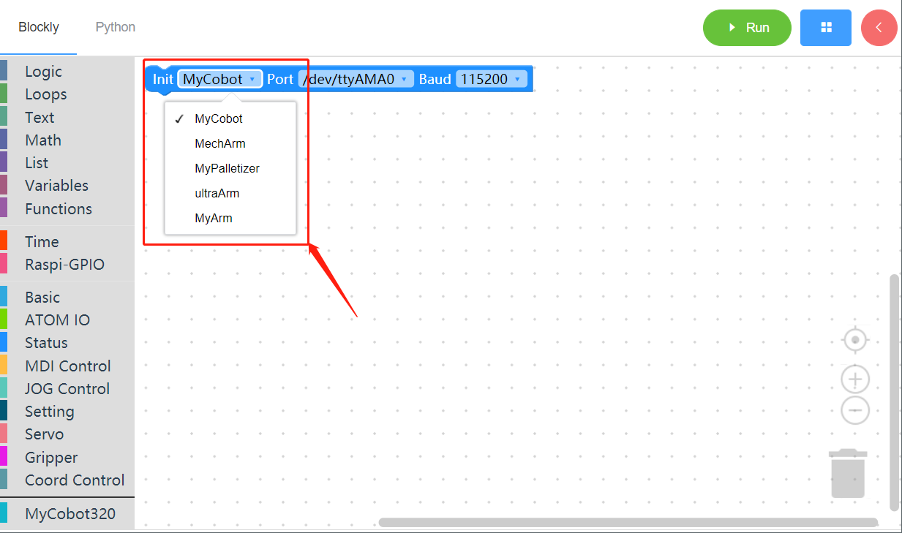
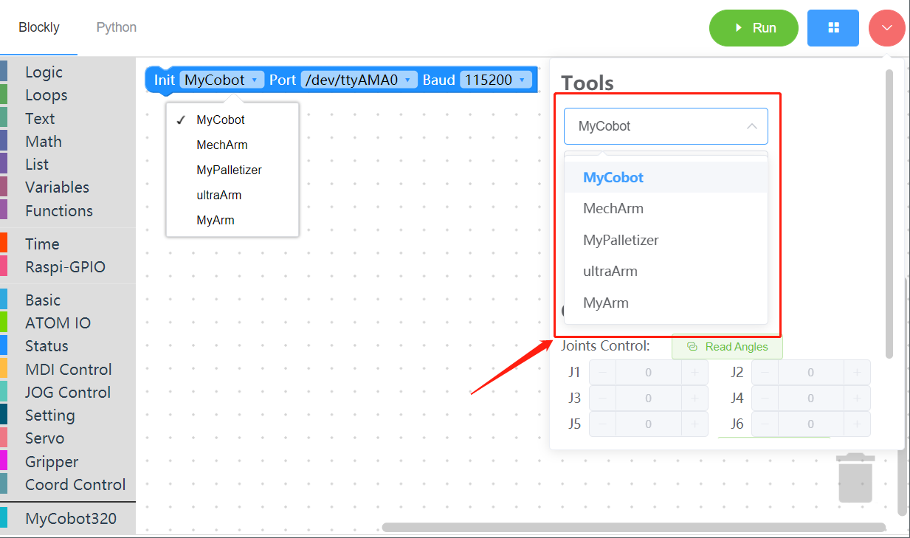
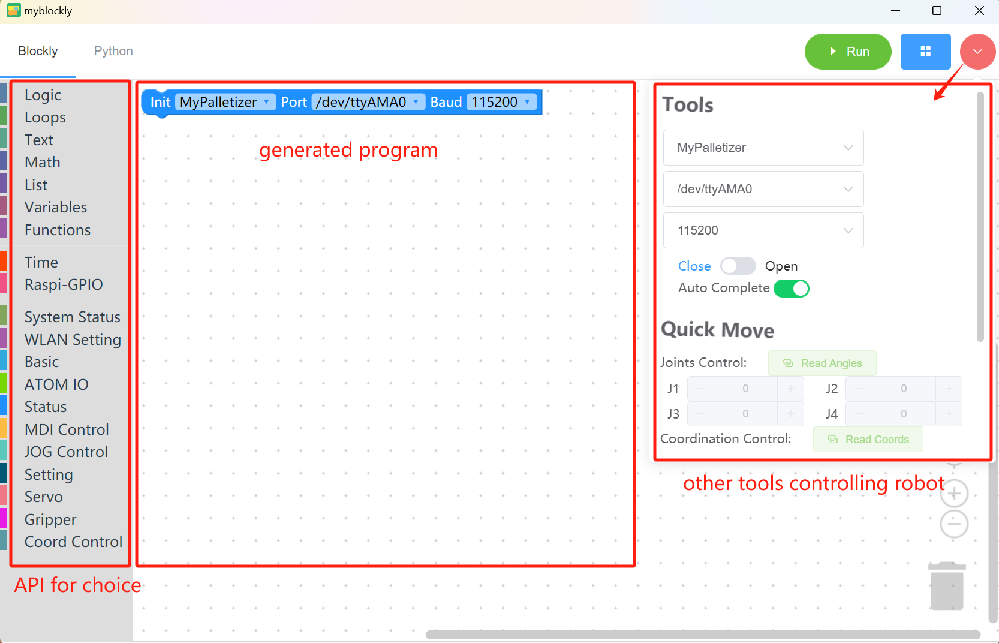
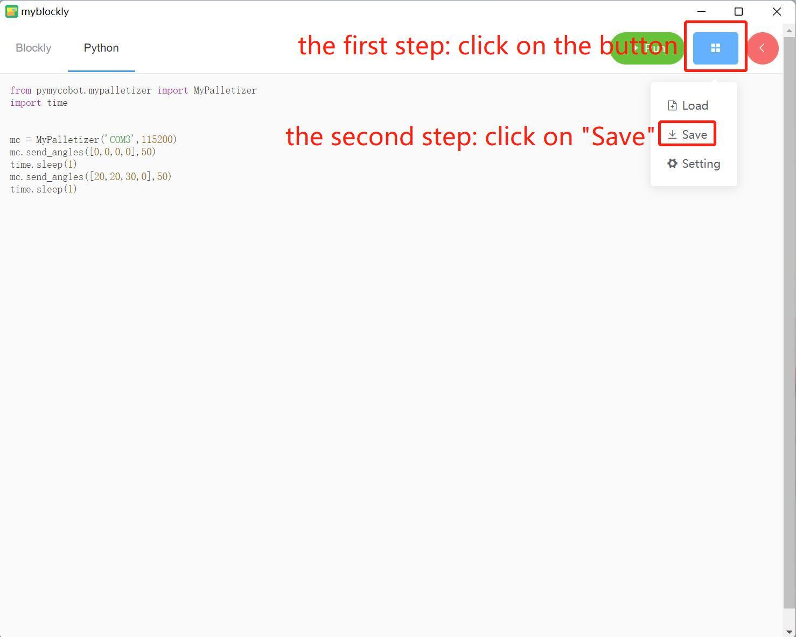
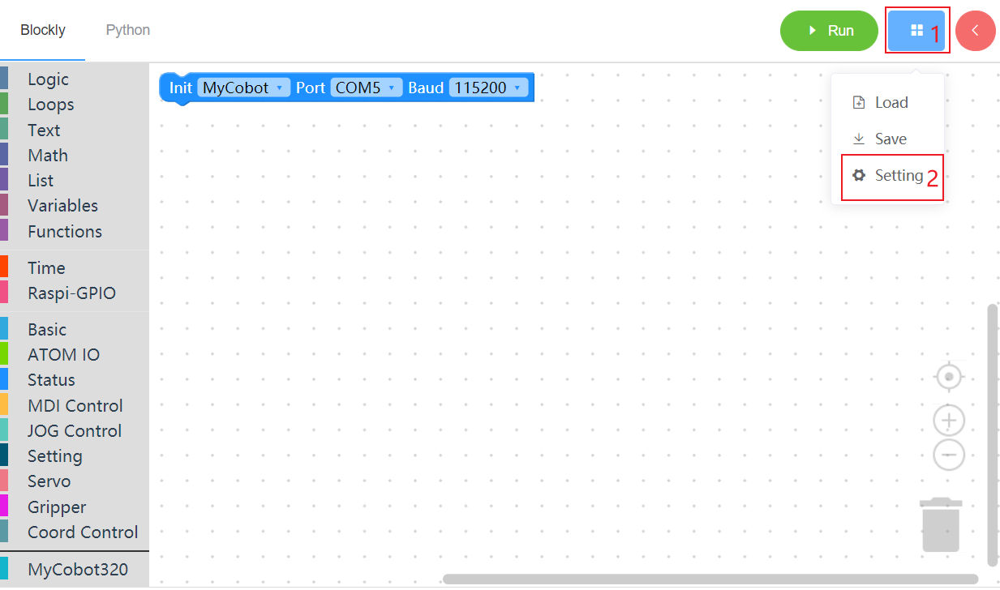

Initial use of myBlockly
Prerequisites
Before you start programming, you must select the corresponding machine model, otherwise it is easy to cause hardware damage 
When controlling the machine with the control panel, you must select the corresponding machine model, otherwise it is easy to cause hardware damage 
myBlockly interface display

Module bar:
Contains the method modules required for program writing, which can be placed in the program editing area for splicing by mouse
MyCobot320 module
Small toolbar:
Click the pink button in the upper right corner to display a small toolbar, where you can select the correct model, serial port number and baud rate. You can also get the real-time joint angle and coordinates of the robot arm by clicking the "Read Angle" or "Read Coordinate" button. Click "+/-" in the joint control or coordinate control bar to control the movement of the robot arm.
Program editing area:
Before running the program, you need to select the correct model, port and baud rate in the initialization module or the small toolbar, otherwise the program will not run normally.
- Drag the required module methods to this area and splice them to realize your own program.
- If the baud rate and serial port have been modified in the right toolbar, but it is still /dev/ttyAMA0, it is due to the myBlockly version. You need to update the software version on the official website first (the latest version will change the information in the editing area after selecting the serial port and baud rate in the toolbar).
Note:
- The baud rate of the M5Stack series is generally 115200, and the baud rate of the Raspberry Pi series is generally 1000000.
| Machine model | Serial port number | Baud rate |
|---|---|---|
| 260 M5 | Win: COM; Linux: /dev/ttyUSB; | 115200 |
| 270 M5 | Win: COM; Linux: /dev/ttyUSB; | 115200 |
| 280 M5 | Win: COM; Linux: /dev/ttyUSB; | 115200 |
| 320 M5 | Win: COM; Linux: /dev/ttyUSB; | 115200 |
| 260 PI | /dev/ttyAMA0 | 1000000 |
| 270 PI | /dev/ttyAMA0 | 1000000 |
| 280 PI | /dev/ttyAMA0 | 1000000 |
| 320 PI | /dev/ttyAMA0 | 115200 |
| 280 Jetson Nano | /dev/ttyTHS1 | 1000000 |
| 280 Arduino | Win: COM; Linux: /dev/ttyUSB or /dev/ttyACM* ; | 1000000 |
To check the serial port number and baud rate of the machine, please go to myStudio Driver Installation section.
When the program cannot run, please check whether the small toolbar is disconnected (as shown in the figure below).


Program Run

Drag the desired method module, edit your own program (as shown above), combine each module structure together (there is a ki sound), and then click "Run" to upload the code to the robot arm to run.
Note: The program that operates the robot arm movement takes time to complete, so after an action, you need to connect a sleep module to give the robot arm time to move before the next movement. (Decide the required time according to the situation. The robot arm is set by default to run myBlockly with a minimum sleep time of no less than 0.5s) Otherwise, the robot arm will not be able to achieve the desired movement.
Click the "Python" option in the upper left corner to view the corresponding Python code, as shown in the figure below.

Program Saving and Loading
MyBlockly programs are saved in *.json format. Click the blue box in the upper right corner of the interface. Click the "Save" option to save the program.

Similarly, click the blue box and click the "Load" option to import the saved program.

How to install and update the software
The installation and update of myBlockly need to go to the official website to download the latest version.
Inside the software, you can update the software through the following steps.
